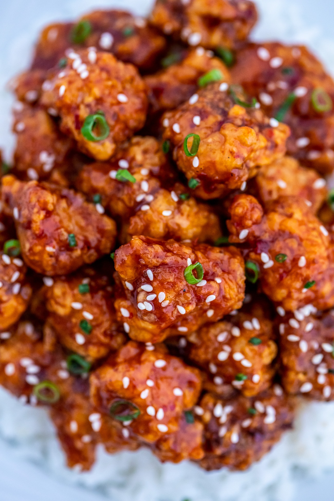

Korean Fried Chicken

Description
Korean-style fried chicken is similar to American fried chicken in that it has a crispy coating and juicy meat. Two things set it apart:
- The sauce—a sweet or spicy sticky concoction that thinly coats the chicken
- The double-frying process that yields an incredibly crispy, crunchy exterior.
Traditional cuisine aside, Korean fried chicken got its start in the U.S post-1950. Black American troops in Osan, Seoul, and Pyeongtaek, who had to celebrate Thanksgiving with chicken instead of turkey, fried and shared with fellow Korean troops. A Korean tank driver called it “a taste of heaven,” a sentiment most Koreans would come to agree with.
Ingredients
Marinade:
- 1 pound skinless, boneless chicken thighs, quartered
- 1/2 yellow onion, grated
- 4 cloves garlic, minced
- 1 teaspoon fine salt
- 1/2 teaspoon freshly ground black pepper
Other:
- 4 cups oil for frying, or as needed
Batter
- 3/4 cup cornstarch
- 1/2 cup self-rising flour
- 1 teaspoon white sugar
- 1/2 teaspoon ground black pepper
- 1/4 teaspoon salt
- 1 cup very cold water, or as needed
Steps
- Make marinade: Stir together chicken, onion, garlic, salt, and pepper in a medium bowl until chicken is coated. Cover the bowl with plastic wrap and refrigerate, 4 hours to overnight.
- Heat oil in a deep fryer or large saucepan to 340 degrees F (171 degrees C).
- While oil is heating, make batter: Whisk together cornstarch, flour, sugar, pepper, and salt in a large bowl. Gradually whisk in cold water until mixture resembles smooth pancake batter. Use tongs to remove chicken from marinade to batter; stir to coat chicken completely. Discard marinade.
- Working in batches, fry chicken in hot oil for 4 minutes. Transfer chicken to a cooling rack.
- Increase oil temperature to 375 degrees F (190 degrees C).
- Working in batches, fry chicken again in hot oil until golden brown and crispy, 3 to 4 minutes. Transfer to a wire rack to drain.